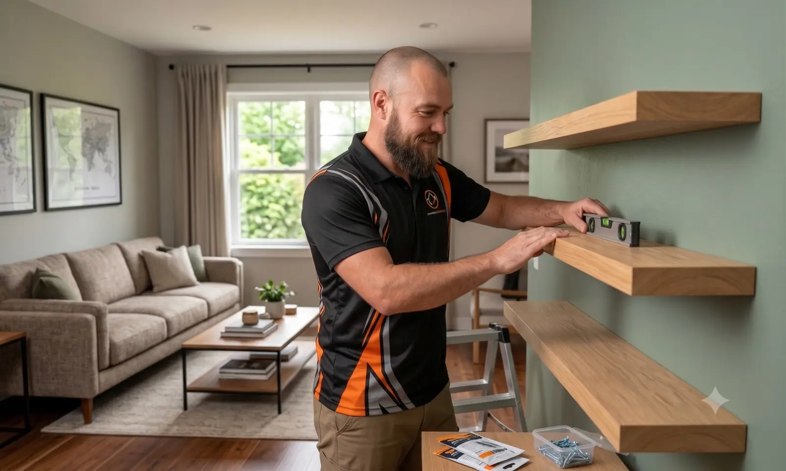
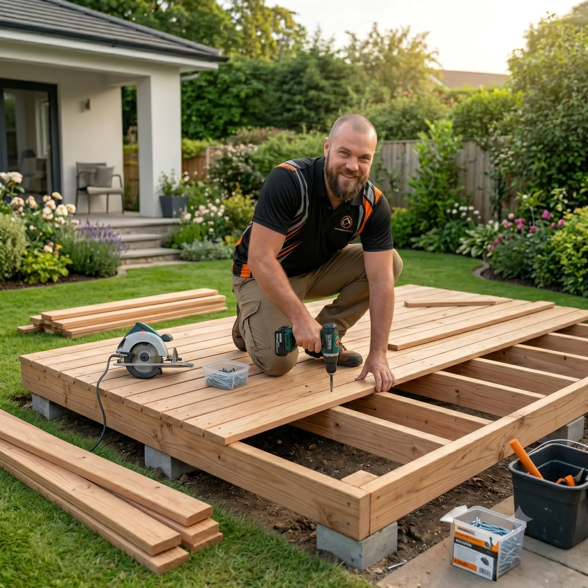
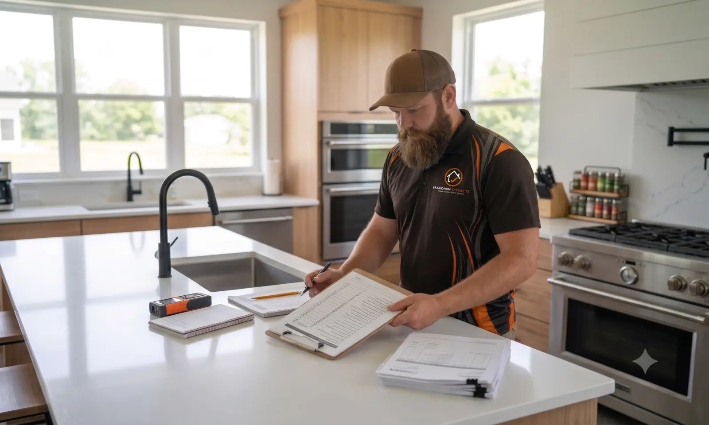

Handyman & Home Repairs
Doors, hardware, wall repairs, shelving, mounting, adjustments and the jobs that never quite make it off the list.
HomeMate Projects provides reliable handyman, home repair and property maintenance services throughout Margaret River and nearby South West communities — with tidy workmanship, clear communication and practical solutions for homes, rentals and holiday properties.
From the small jobs that keep a property running smoothly to larger repair and improvement projects, HomeMate Projects offers one local point of contact for a broad range of handyman work.

Doors, hardware, wall repairs, shelving, mounting, adjustments and the jobs that never quite make it off the list.

Ongoing maintenance for owner-occupied homes, rentals and holiday properties, including preventative repairs and outdoor upkeep.

Prompt practical maintenance to help keep short-stay properties safe, presentable and guest-ready.
Deck work, garden improvements, patio projects, vanity replacement, property repairs and the smaller jobs that make a home work better.
View Previous Jobs
The gallery uses completed HomeMate Projects work so visitors can see the range and finish of previous jobs.
Send through the details or book a suitable time for a site visit and quote.